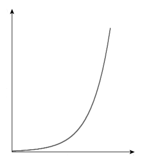
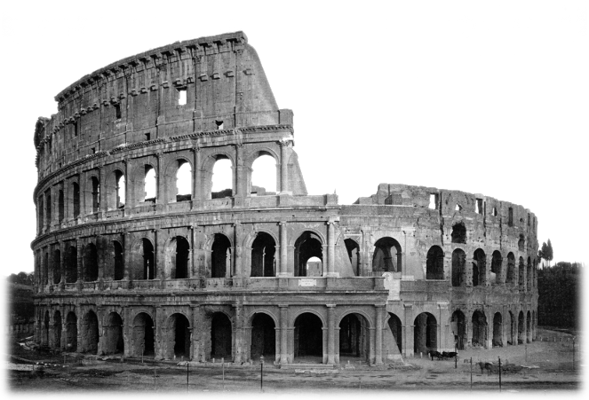
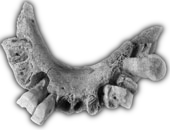

This is a CSS-rendered representation of Leonardo DaVinci's Infinitiy Machine as displayed for example in the Pheno Technology Museum in Wolfsburg, Germany. Here you can see an original installation in action. This one is in the Technorama museum in Winterthur, Switzerland.

This gear revolves once every 10 seconds.
Because of the 1/5 ratio between small and large cog-wheel this one revolves at 1/5th the speed: 10×5=50 seconds.
That means this gear revolves once every 10×5×5×5×5=6250 seconds or ∼1.5 hours, (feel free to grab a stop-watch and check).

By the magic of exponential growth (or deceleration in this case), This gear will revolve once every 10×58 seconds, or about 45 days.
10×512 ∼77 years: This gear has turned once since the start of WWII.

10×514 ∼1,935 yrs: One turn since construction of the Colosseum.
10×516 ∼48,000 yrs: One turn since start of the Later Stone Age, while one more full turn is estimated to bring us the current ice age's next Glacial Period.
Incidentally ~50.000 years is how long it will take for the Arecibo Message to make it to its destination and back.

10×518 ∼1.2 m. yrs:
One turn since the estimated first European.

10×521 ∼150 m. yrs: Stegosauruses!!.
10×524 ∼18 bn. yrs:
This gear has made a little over one full turn since the Big Bang. According to the Big Rip Hypothesis another turn will bring us close to the end of the universe.
18 bn. years stored in sub-pixel space .. pretty cool, huh? :)